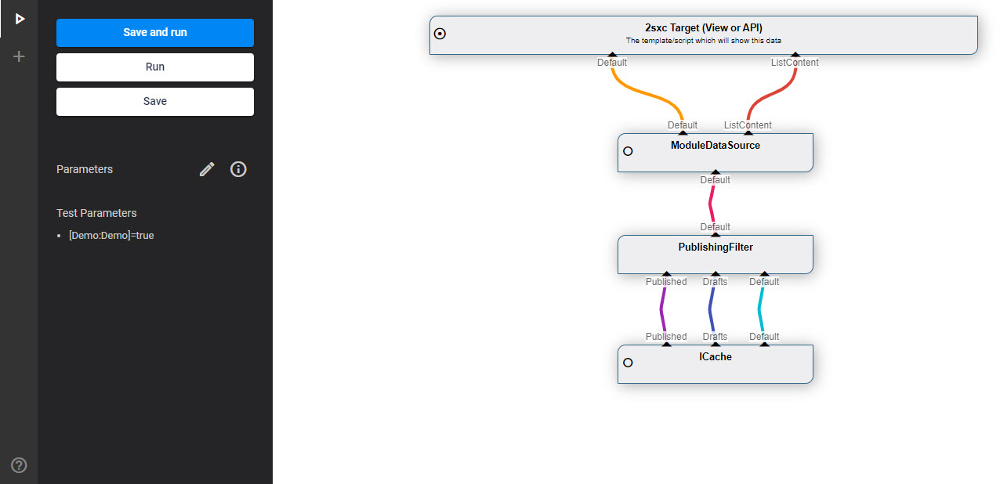

Prepare Data for Templates and WebApi
A common Step in the data-flow is the Data Preparation before the View or Custom WebApi work with it. This is fully automated and has three common scenarios:
- No Prepare where no Data is used or at least no Instance Data
- Default where content added to a Module by an editor is retrieved and prepared
- Query where a custom VisualQuery is configured to get the data
Note: A special case where data is prepared is when it's used for indexing in the full-text search. This is documented in Search.
No Preparation
Two cases need no preparation at all
- Templates / code which don't use any data
- Templates / code which use only general App data or Queries but not instance data
In these cases the View is configured to not use data and the template or WebApi will either not use data or will only access it through the App.Data which has all data at it's disposal.
Default Preparation: Instance Data
By default all Module Instances can have data which the editor has added manually in the CMS UI. This corresponds to the normal Content Editing scenario. Internally it uses a Query which looks like this:
This does the following (starting from the bottom):
- The
ICacheis an IAppRoot DataSource which hass all data of this App - The PublishingFilter will then ensure that editors can see draft-data, and public users can only see published data
- The
ModuleDataSourceis a CmsBlock which will select all relevant data of this Module instance - It then provides the retrieved data on a Stream
Default(all the items) andHeader(previouslyListContent)
The Template or WebApi running for this Module Instance will then have this data
Contentor often@Contenthas the first item on theDefaultstreamHeaderor ofter@Headerhas the first and only item on theListContentstreamDatawill contain all the streams as configured in the above query, usually you will useData["Default"]to loop through lists of all the content items
Note that the ModuleDataSource also does some more magic like
- Retrieve the Demo-Item as configured in the View, if no data exists (or a public user is looking at the page, and the data is still draft)
- Add more information like
IsDemoItemto each piece of Information
The Content App only has this kind of preparation. Customs Apps can also use this, but it can also be configured to use custom Queries (see below).
Query Preparation
If your View is configured to use a Query it will instead run this query.
Note
Note that your query can also extend the standard Query as mentioned above and provide both the normal edited content and add more streams as needed.
Tip
A common use case for Queries extending the default query is scenarios where the edited content provides parameters for the Query.
For example, the Header of the News App could contain a property Category which the editor can choose. The rest of the Query could then use this category to filter
what items are retrieved.
Note about Accessing all App Data in your Code
Your template / WebAPI can also always access all the data in the App using App.Data.
You may Also want to Learn about
- Create queries using VisualQuery
- Prepare data in code
- Prepare data for the full-text search index of the platform
- Headless WebAPI
- DataSources
Read more
- Queries
- Content App